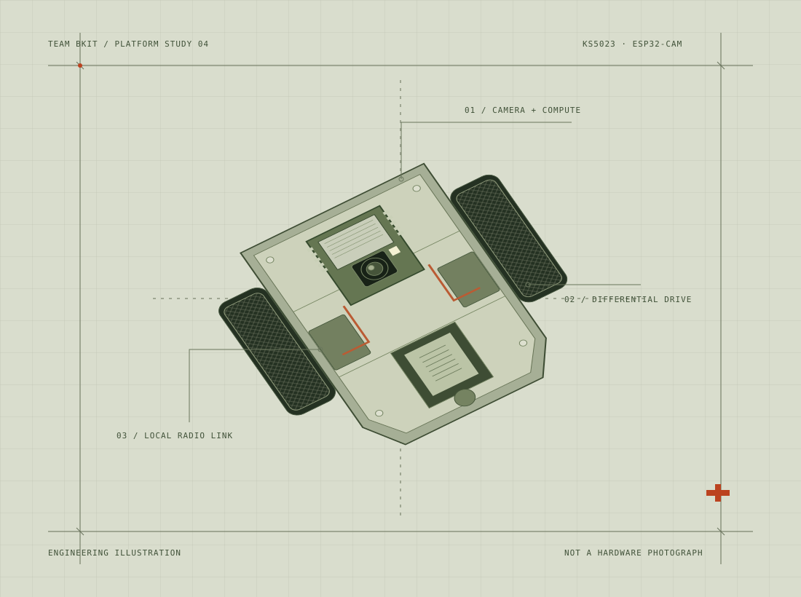
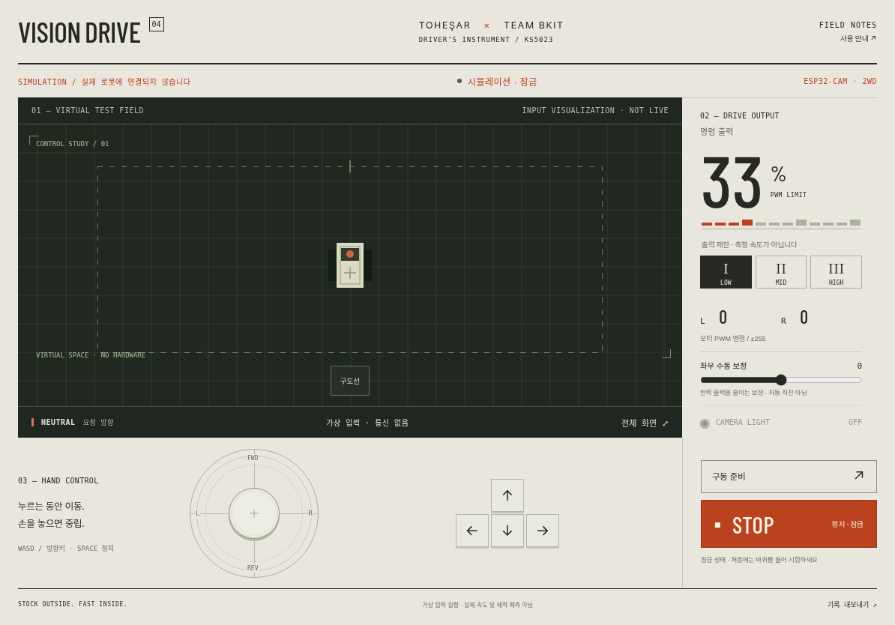

VISION DRIVE

작은 차에도,
온전한 운전석을.
자동차를 좋아하는 마음에서 시작해,
손끝의 입력이 실제 움직임이 되기까지.
카메라와 두 모터, 그리고 연결을 잃었을 때
멈출 줄 아는 작은 기계를 설계했습니다.
체험은 가상 입력 시각화입니다. 실제 로봇 조종은 설치 후 로봇의 Wi-Fi에서만 열립니다.
펌웨어 컴파일·모의 검증 완료 / 실물 인수 시험 필요
Less interface.
More intention.
가장 크게 보여야 하는 것은 시야.
가장 쉽게 닿아야 하는 것은 정지.
손의 움직임과 화면의 위계를 같은 기준으로 다듬었습니다.

One setup.
Then, just drive.
처음 한 번 USB로 설치한 뒤,
노트북 서버 없이 로봇과 직접 연결합니다.
기존 상태를 보관합니다.
전체 플래시를 백업하고 저장 파일을 검증합니다. 복원 경로가 준비된 뒤 새 펌웨어를 기록합니다.
로봇의 Wi-Fi를 선택합니다.
아이패드·스마트폰에서 VISION-DRIVE-…에 연결합니다. 인터넷이나 학교 공유기가 필요하지 않습니다.
192.168.4.1을 엽니다.
조종석과 영상은 로봇이 직접 제공합니다. 현재 시야를 확인하고 LOW 출력부터 구동 준비를 누릅니다.
Trust is a
design decision.
명령이 닿지 않으면, 멈추도록.
화면이 돌아와도, 저절로 출발하지 않도록.
- 제어 경로
- 브라우저 → ESP32 AP → 모터
- 명령 만료
- 350 ms / 독립 안전 태스크
- 영상 갱신
- JPEG 프레임별 수신 확인
- 구동 준비
- 최근 영상 · 단일 세션 · 수동 재준비
- 출력
- 85 / 170 / 255 PWM · 좌우 수동 보정
- 연결
- 로컬 Wi-Fi AP / 동시 단말 1대
원본 STUDIO 03의 노트북 중계 방식과 제조사 펌웨어를 분석해, 기기 내부에서 제어와 안전 정지가 실행되는 구조로 옮겼습니다. 카메라와 모터 PWM의 자원 충돌을 피하고, 오래된 세션의 명령을 거부합니다.
현재의 검증 범위를 공개합니다. 소스 컴파일, 펌웨어 상태 머신, 모의 HTTP 통신과 반응형 화면을 검증했습니다. 실물 기기의 모터 방향·전원 안정성·Wi-Fi 단절 정지 시간과 iPad Safari 실기는 인수 시험으로 남아 있습니다. 350 ms는 소프트웨어 명령 만료 기준이며 기계적 정지 시간을 뜻하지 않습니다.
출력과 방향 표시는 명령 기준입니다. 좌우 수동 보정은 두 모터의 PWM을 조절하며, 실제 직진 여부를 감지하지는 못합니다. 속도·배터리·거리 센서값, 자동 자세 안정·자동 직진이나 장애물 회피를 만들어 표시하지 않습니다.
검증 결과와 실기 절차 읽기 ↗Made to be
understood.
동작하는 코드와 복원 방법,
그리고 확인한 것과 아직 확인할 것을 함께 남깁니다.